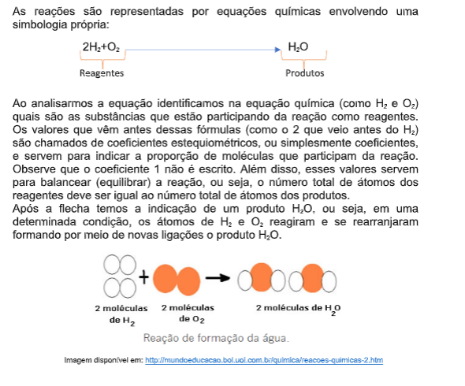
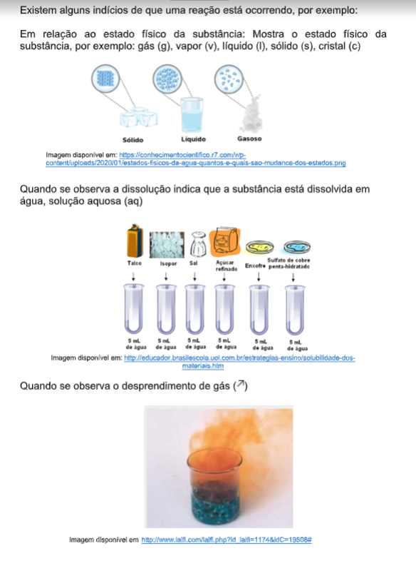
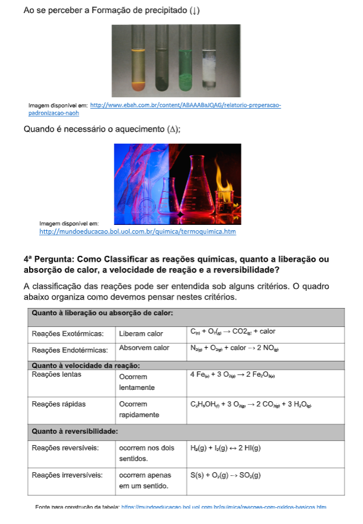
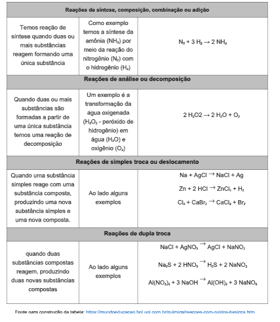
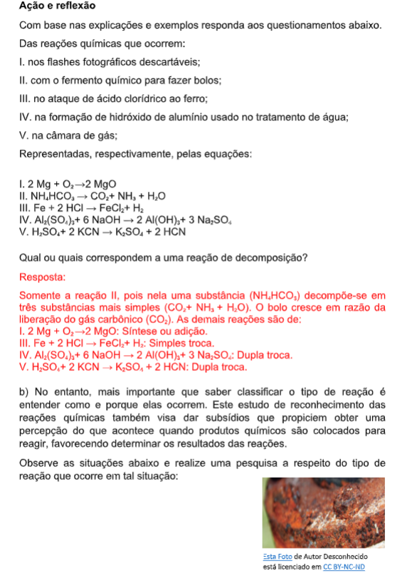
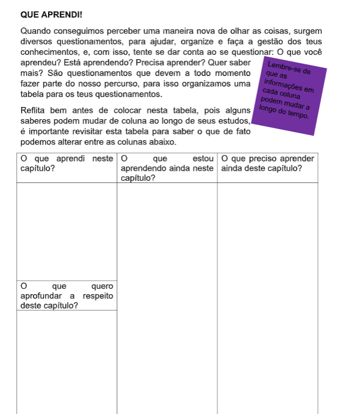

Capítulo 1
As constantes da metalurgia
Como os minérios estão relacionados na indústria metalúrgica? Quais conceitos da Química são relevantes para a indústria metalúrgica?CONTEXTUALIZANDO
A relação entre a Metalurgia e a Química sempre foi muito próxima e atender a critérios de qualidade e segurança, a coloca com uma área do conhecimento primordial, desde a maneira como os processos químicos são estruturados até industriais na relação como os colaboradores vão atuar, diversos seguimentos são possíveis de se destacar, como por exemplo a extração, transformações químicas e suas aplicações em materiais metálicos. Diante dista estudar o comportamento dos metais é um campo de interesse.

 (Re)construindo conhecimentos
(Re)construindo conhecimentos
1ª pergunta como podemos organizar o nosso estudo dos metais?

Na imagem acima, o símbolo é representado pela sigla
que normalmente deriva do nome do elemento em latim.
Além do símbolo podemos identificar o número atômico
representado pela letra Z, que indica o número de
partículas positivas que o átomo possui. Também é
possível identificar a distribuição dos elétrons, ou seja, as
cargas negativas, distribuídas conforme os número de
elétrons da última camada ou camada de valência,
podemos prever o comportamento deste átomo com
relação ao tipo de ligação química que pode ser
realizada, bem como, as substâncias que poderão ser
 formadas por ele.
formadas por ele.
O modelo que utilizaremos é o
modelo de Rutherford Bohr, neste
modelo os átomos são divididos em
camadas: K,L,M,N ( veja a imagem
ao lado e perceberá que K ´w a
camada mais interna e P, por
consequência a mais externa. Os
átomos atingem a estabilidade
apresentando 8 elétrons na última
camada. 
Observe o
quadro ao
lado, ao
analisarmos
os dados
disponíveis
no quadro
podemos
identificar
que cada
nível de
energia que
compõe a
eletrosfera apresenta uma capacidade específica para os elétrons. Além disso,
também identificamos que: 
Os átomos dos metais disponíveis no quadro apresentam uma
semelhança quanto ao número de elétrons na última camada, ou
seja, possuem apenas 1, 2 ou 3 elétrons na última camada
eletrônica que normalmente é bem afastada do núcleo, e
consequentemente, atrai pouco os elétrons e esta característica
atômica resulta nas propriedades dos metais como condutibilidade,
brilho, maleabilidade que tornam estes materiais importantes no cotidiano. 
Os metais são substâncias simples constituídas por átomos metálicos e seus núcleos apresentam baixa atração pelos elétrons da camada de valência, a última camada. Assim, quando átomos de metais se unem formam uma estrutura em que os elétrons da última camada não ficam restritos aos respectivos átomos, mas sim formam uma espécie de nuvem eletrônica. Este fato ocorre devido à aproximação de núcleos de átomos vizinhos que exercem uma pequena atração nos elétrons da camada de valência dos outros átomos.
Neste modelo os elétrons da última
camada, transitam livremente pela
estrutura. Uma “nuvem” ou “mar” de
elétrons livres funciona então como uma
ligação metálica, mantendo os átomos
unidos.
Essa estrutura em retículos e esse tipo
de ligação química resultam em uma
série de propriedades que são
características dos átomos. Esta
liberdade de movimentação dos elétrons
explica a condução de eletricidade.
As principais características dos metais
podem ser explicadas por este modelo
no qual cátions dos elementos
metálicos estão organizados em uma
espécie de reticulo cristalino e os elétrons das camadas externas circundam
livremente entre eles. 
As propriedades apresentadas pelos
metais devido a esta estrutura são:
maleabilidade, ductilidade, condutibilidade
e brilho.
Os metais passaram a ser muito utilizados
quando se descobriu que o calor poderia
mudar o estado físico das substâncias
metálicas de sólido para líquido o que
oportunizou a produção ligas metálicas ou
misturas homogêneas. Com a incidência
de calor, a matéria altera seu estado de
agregação. 
Com base nas imagens que estão numeradas, tente identificar e separar os materiais que julga possuir algum dos metais nobres (Prata, cobre e ouro).
 Ação e reflexãoAgora pense e separe conforme a tabela abaixo, outros objetos ou situações de sua experiência que podem ter relação com o ouro, prata e cobre. Não precisam ser objetos complexos, por exemplo, um conjunto de talheres de prata.
Notará que alguns exemplos podem estar enquadrados em mais de uma coluna, não tem problema, a única questão importante é estar atento ao motivo que levou você a colocá-lo em mis de uma coluna.

 SAIBA MAIS!
Historicamente, os metais considerados nobres como Ouro, Cobre e Prata foram os primeiros a serem descobertos e utilizados pelo homem. Eles recebem esta denominação porque estão relacionados ao fato destes não reagirem com outros elementos, sendo encontrados na natureza da sua forma bruta. Para que compreenda mais vamos olhar um pouco a história dos átomos.
Cientificamente, a ideia básica sobre a teoria atômica, surgiu entre 1808 e 1810 com a teoria de John Dalton, que descreveu a matéria composta por partículas muito pequenas para serem vistas, chamadas de átomos. Para este cientista, o modelo que melhor representava um átomo era de uma esfera maciça, indivisível e indestrutível, conhecido como modelo da bola de bilhar. Porém, os modelos atômicos foram sofrendo formulações teóricas desde os gregos o que deixa evidente que a construção do conhecimento científico apresenta uma evolução histórica. 
Atualmente, modelo atômico está pautado nos conhecimentos da física quântica, sendo considerado como uma partícula onda que apresenta prótons, partículas positivas, e nêutrons, partículas neutras em uma região denominada núcleo e outra região, denominada eletrosfera onde concentram-se as partículas de carga negativa. 
QUE APRENDI!Quando conseguimos perceber uma maneira nova de olhar as coisas, surgem diversos questionamentos, para ajudar, organize e faça a gestão dos teus conhecimentos, e, com isso, tente se dar conta ao se questionar: O que você aprendeu? Está aprendendo? Precisa aprender? Quer saber mais? São questionamentos que devem a todo momento fazer parte do nosso percurso, para isso organizamos uma tabela para os teus questionamentos.
Reflita bem antes de colocar nesta tabela, pois alguns saberes podem mudar de coluna ao longo de seus estudos, é importante revisitar esta tabela para saber o que de fato podemos alterar entre as colunas abaixo.